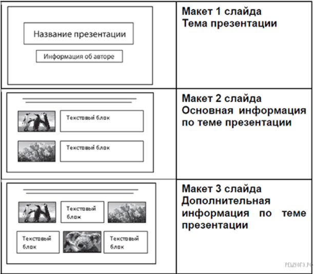

Задание 13. Создавать презентации (вариант задания 13.1) или создавать текстовый документ (вариант задания 13.2)
1. Ровно три слайда без анимации. Параметры страницы (слайда): экран (16:9), ориентация альбомная.
2. Содержание, структура, форматирование шрифта и размещение изображений на слайдах:
● первый слайд — титульный слайд с названием презентации; в подзаголовке титульного слайда в качестве информации об авторе презентации указывается идентификационный номер участника экзамена;
● второй слайд — основная информация в соответствии с заданием, размещённая по образцу на рисунке макета слайда 2:
− заголовок слайда;
− два блока текста;
− два изображения;
● третий слайд — дополнительная информация по теме презентации, размещённая по образцу на рисунке макета слайда 3:
− заголовок слайда;
− три изображения;
− три блока текста.
На макетах слайдов существенным является наличие всех объектов, включая заголовки, их взаимное расположение. Выравнивание объектов, ориентация изображений выполняются произвольно в соответствии с замыслом автора работы и служат наилучшему раскрытию темы.

В презентации должен использоваться единый тип шрифта.
Размер шрифта: для названия презентации на титульном слайде — 40 пунктов; для подзаголовка на титульном слайде и заголовков слайдов — 24 пункта; для подзаголовков на втором и третьем слайдах и для основного текста — 20 пунктов.Текст не должен перекрывать основные изображения или сливаться с фоном.
Данный текст должен быть набран шрифтом размером 14 пунктов обычного начертания. Отступ первой строки первого абзаца основного текста — 1 см. Расстояние между строками текста не менее одинарного, но не более полуторного междустрочного интервала.
Основной текст выровнен по ширине; в ячейках первого столбца таблицы применено выравнивание по левому краю, в ячейках второго и третьего столбцов — по центру. В основном тексте и таблице есть слова, выделенные полужирным, курсивным шрифтом и подчёркиванием.Ширина таблицы меньше ширины основного текста. Таблица выровнена на странице по центру горизонтали.
При этом допустимо, чтобы ширина Вашего текста отличалась от ширины текста в примере, поскольку ширина текста зависит от размеров страницы и полей. В этом случае разбиение текста на строки должно соответствовать стандартной ширине абзаца.Интервал между текстом и таблицей не менее 12 пунктов, но не более 24 пунктов.
Текст сохраните в файле, имя которого Вам сообщат организаторы. Файл ответа необходимо сохранить в одном из следующих форматов: *.odt, или *.doc, или *.docx.Пример решения задания 13.1
Используя информацию и иллюстративный материал, содержащийся в каталоге «Благородный олень», создайте презентацию из трёх слайдов на тему «Благородный олень». В презентации должны содержаться краткие иллюстрированные сведения о внешнем виде, об ареале обитания, образе жизни и рационе благородных оленей.
Все слайды должны быть выполнены в едином стиле, каждый слайд должен быть озаглавлен.
Презентацию сохраните в файле, имя которого Вам сообщат организаторы экзамена. Файл ответа необходимо сохранить в одном из следующих форматов: *.odp, или *.ppt, или *.pptx.